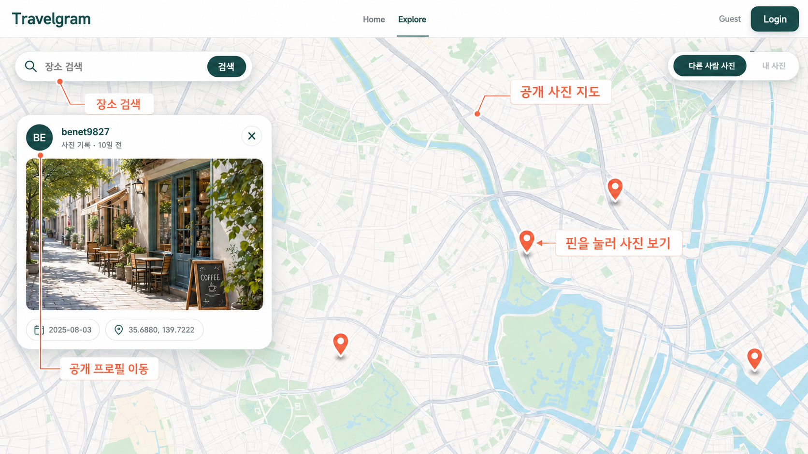

lock
lock장소 아카이브 소개
이 사진은 어디서 찍은 걸까?
Ikkyee에서 장소와 여행자의 기록을 확인하세요.


흩어진 사진을 하나로
여행 사진
지도 기록
날짜별 앨범
장소별 정리
비공개 보관
선택 공유
지도 위에 남기다
Ikkyee 소개
Ikkyee는 여행 사진의 위치와 시간을 읽어 날짜별, 장소별 여행 기록으로 정리해주는 지도 기반 사진 아카이브입니다.
사진을 선택하면 여행의 동선이 지도 위에 펼쳐지고, 공유하고 싶은 순간만 골라 보여줄 수 있어요.
IBIZA ROCKS
GCN
LOVE TRAILS
ENVISION
Ikkyee 여행 사진 지도
How Explore Works
지도를 움직이며 사진이 남겨진 장소를 찾아보세요
장소를 검색하고, 지도 위 핀을 눌러 사진과 기록을 확인하고, 마음에 드는 사용자의 공개 프로필로 이어집니다. 처음 방문한 사람도 무엇을 눌러야 하는지 바로 알 수 있게 Explore 흐름을 홈에서 먼저 보여줍니다.

Home Archive
내 사진과 앨범을 정리하는 공간
선택한 사진만 업로드됩니다. 모든 사진과 앨범은 기본 비공개입니다.
최근 사진
locklockpublic좋아요한 사진
아직 좋아요한 사진이 없습니다.
Explore에서 마음에 드는 사진을 눌러 모아보세요.
여행 앨범
여행 단위로 정리된 나의 앨범
Personal Photos
개별사진
앨범으로 묶지 않은 개인 사진을 확인하고, 위치 정보가 필요한 사진을 따로 관리합니다.
내가 올린 사진
0장
Liked Photos
내가 좋아요한 사진
Explore와 사진 상세에서 좋아요를 누른 사진을 한곳에 모아 봅니다.
좋아요 모음
0장
Photo Upload
여행 사진을 선택해주세요.
앨범을 만들지 않고 개별 사진을 내 보관함에 저장합니다. 위치가 없는 사진은 저장 후 개별사진 페이지에서 확인할 수 있습니다.
cloud_upload
사진 파일 선택
JPG, PNG, WEBP 파일을 선택하거나 이곳에 끌어다 놓을 수 있습니다.
업로드 준비 완료
추억의 조각들이 지도로 변할 준비를 마쳤습니다.
업로드할 사진과 기본 비공개 상태를 확인한 뒤 내 개별사진 보관함에 저장합니다.
info
모든 사진은 기본 비공개로 저장됩니다.
여행 중 찍은 사진을 기기에서 선택합니다.
GPS가 있는 사진은 자동으로 지도에 연결됩니다.
업로드된 사진은 공개 전까지 Home에만 보관됩니다.
Album Analysis
앨범 만들기: 분석 결과 확인
선택한 사진을 시간과 위치 흐름으로 묶어 여행 앨범 초안을 구성합니다. 사진 업로드와는 다른 앨범 구성 화면입니다.
Suggested album
제주 4박 5일
128장
14곳
5일 타임라인
info
지도에서 핀을 누르면 공개 여행을 볼 수 있습니다.
Public Trip
Jeju East Coast Drive
성산에서 월정리까지 이어지는 바람 많은 해안 길. 공개할 사진만 골라 만든 여행 기록입니다.
Route
3일 · 11곳 · 공개 사진 42장
성산일출봉월정리세화리김녕
Day 1
바람 많은 해안 도로
낮게 깔린 시간의 빛을 따라 성산 주변을 천천히 통과했습니다.
Day 2
월정리의 푸른 오후
작은 카페와 바다 사이를 걸으며 사진을 남겼습니다.
Day 3
세화리에서 김녕까지
공개해도 좋은 장면만 골라 하나의 앨범으로 정리했습니다.
공개 사진
공개 앨범에 포함된 대표 사진입니다.
관련 앨범
같은 작성자가 공개한 다른 여행입니다.
Tokyo Night Walk18장 · 7곳Italian Blue Week86장 · 14곳Paris Alley Notes31장 · 9곳
Public Profile
Ikkyee
지도에 공개한 여행만 모아둔 공개 프로필입니다.
공개 사진사진을 공개하면 이곳에 표시됩니다.Jeju East Coast Drive42장 · 11곳Tokyo Night Walk18장 · 7곳Italian Blue Week86장 · 14곳